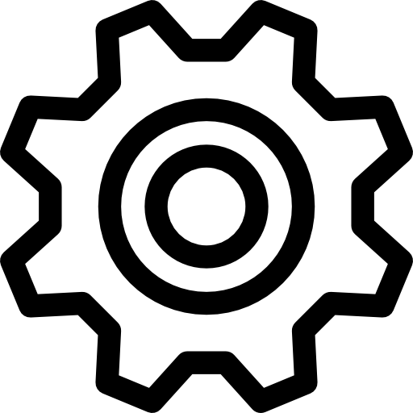
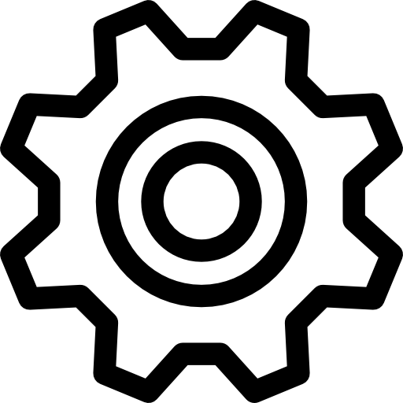

Ceci est un titre bien trop long pour l'écrire sur toute la longueur dans la liste et va
surement etre coupé quand on cliqurea sur la tache en question mais c'est fait expres pour faire les
tests de bug comme Martin me l'avait conséillé
Pour faire une bonne descrition il faut choisir les bons mots, et savoir etre precis dans ce qu'on dit
pour que les autres developpeurs et designer et autres puissent savoir concretement de quoi on veut
parler. il faut que ca soit detaillé sans etre forcement trop long pour pas avoir la flemme de lire tout
ce bazar.
Par Martin est un gentil vacanciers un peu flemmard mais uand meme sympa (c'est toujours un test de
bug eheh) le 11/08/2020

 
